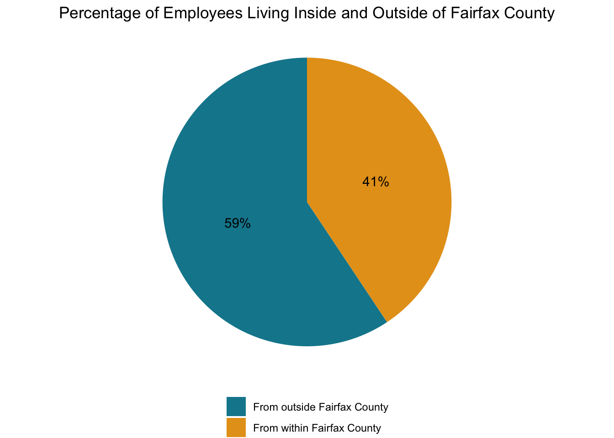
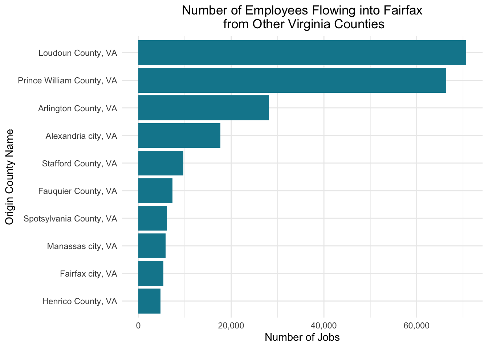
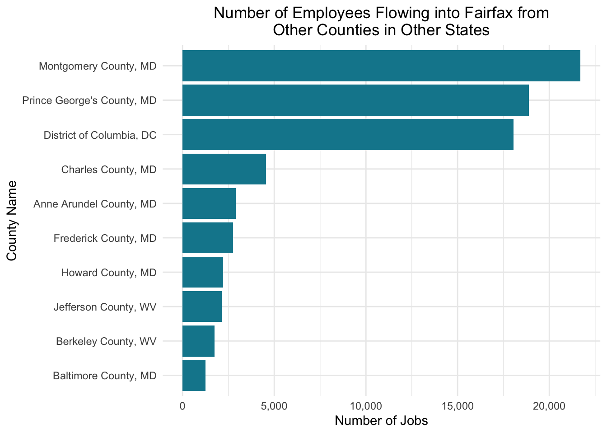

Examining Employee Flows Into Fairfax County
This page explores the origins of workers who travel into Fairfax County for work but live outside of the county.
eda geospatial job flows interactive mapApproach
To prepare for an analysis of Fairfax County job flows, we wanted to better understand the geographic origins of workers who reside in other localities but work in Fairfax County. We examined flows to Fairfax County from within Virginia, from other states, and from counties in other states to identify localities that send the highest number of workers to Fairfax County. We also mapped these flows for the top 10 originating geographies in each category. This analysis can help our stakeholder understand transit flows into the county, and it informs our subsequent job flow network analyses.
We used the 2017 Longitudinal Employer-Household Dynamics (LEHD) Origin-Destination Employment Statistics (LODES) Origin Destination (OD) data to conduct our analyses. The LODES data is based on administrative records provided by the US Census Bureau, and contains information on jobs by worker sociodemographic characteristics, jobs by firm characteristics, and jobs by origin and destination census block groups. The LODES OD files indicate where individuals work and reside at census block level. The OD main files include jobs for which the residence and workplace are both in-state; the auxiliary files include jobs for which the workplace is in-state while the residence is out-of-state. We retrieved the main and auxiliary OD files and aggregated data to census tract level. We filtered the data to jobs located in Fairfax County with worker residence outside the county.
We employed state geography crosswalk data to convert geographic identifiers to descriptive county and state names. We used the sf, dyplr, readr, tigris, and stplnr R packages in working with the data. To visualize our findings, we used used ggplot, leaflet, and tmap.
Major Findings
Among counties in Virginia, Loudoun County and Prince William County are the counties that send the greatest number of workers to Fairfax County. From other states, Maryland has the greatest number of residents that work in Fairfax County. From counties in other states, Montgomery and Prince George County, MD, and the District of Columbia have the greatest number of residents working in Fairfax County. We visualize these origins on the following plots.
What Percent of Employees Flow into
Fairfax From Outside of the County?
To determine what proportion of employees in Fairfax County do not also live in the county, we filtered all jobs in Fairfax County for those with a residence geography outside of the county but workplace geography inside of the county. Over half, or 59% of all jobs in Fairfax County are held by employees who do not live in the county.

What Percentage of Employees Come from Other Counties in Virginia?
Approximately 56% of the employees flowing into Fairfax County from outside are from Virginia. Of the 56%, the majority are from Loudoun County and Prince William County.

Visualizing the top 10 flows on a map highlights the distances that these networks span and the importance that employment in Fairfax County has not only on their own residents, but for residents in of neighboring areas and communities farther away.
What Percentage of Employees Come from Other States?
Of the employees flowing into Fairfax County from other states, the majority are from Maryland and the District of Columbia.

Visualizing the top 10 out-of-state flows highlights unexpected job flows, particularly from Florida and South Carolina. These states send in relatively few jobs and are geographically distant to Fairfax County. We consider these flows as outliers and interpret them cautiously; perhaps the main office for these jobs is in Fairfax, but workers are not frequently on location and work the majority of time from Florida or South Carolina, respectively. We are unable to make conclusions about the nature of these flows from the data.
Where are the Major Counties
Outside of Fairfax that Workers Reside In?
Of the employees flowing into Fairfax County from other states, most come from counties in Maryland, Washington DC, and West Virginia.

The following map, visualizing the top 10 out-of-state flows by county, is similar to the map of flows from other states to Fairfax County. However, it provides additional geographic granularity. The top 10 counties sending workers to Fairfax County from other states are geographically relatively close.